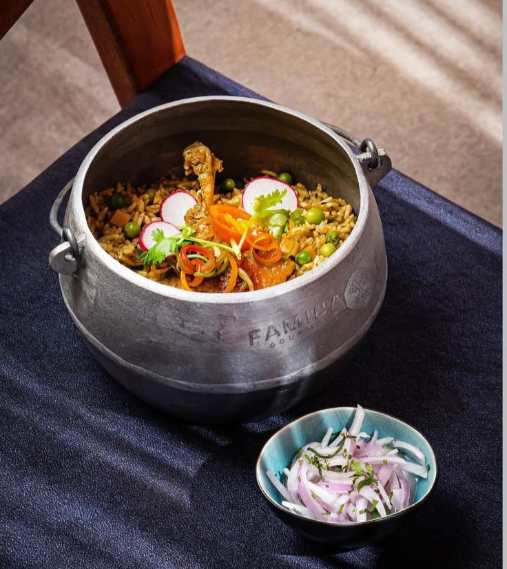
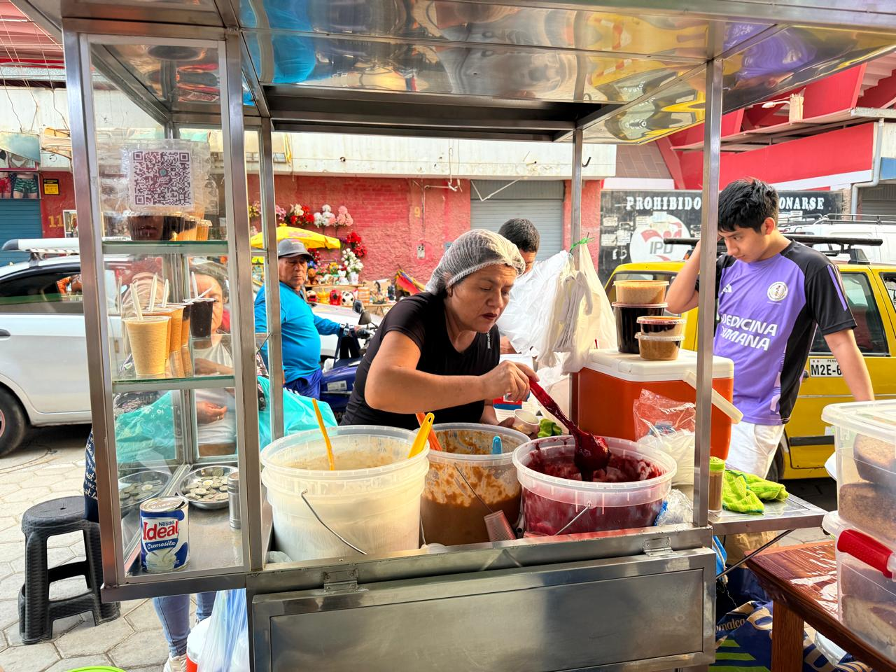

DON SHALO

Don Shalo representa la continuidad de la cocina tradicional lambayecana. Sus platos conservan técnicas heredadas y sabores que forman parte de la identidad regional.
Leer más
SEMANARIO DE GASTRONOMÍA LAMBAYECANA

El king kong lambayecano representa una tradición que ha perdurado por generaciones. Elaborado con capas de galleta, manjar y frutas, este dulce se ha convertido en símbolo de identidad cultural del norte peruano.
Más que un postre, es una experiencia compartida que conecta historia, familia y territorio.
Leer más
Don Shalo representa la continuidad de la cocina tradicional lambayecana. Sus platos conservan técnicas heredadas y sabores que forman parte de la identidad regional.
Leer más
Una propuesta contemporánea que reinterpreta la gastronomía local. Combina innovación con respeto por los ingredientes tradicionales.
Leer másEn Chiclayo, los emprendimientos gastronómicos mantienen viva la tradición desde lo cotidiano. El champús con cachangas, preparado a partir de recetas familiares, no solo representa un sabor típico del norte, sino también una historia de constancia, identidad y crecimiento.
Leer más
El cabrito a la chiclayana redefine la experiencia gastronómica en Chiclayo, combinando tradición y entretenimiento.

Leer másUn carrito en el Mercado Modelo mantiene viva una tradición dulce que forma parte de la identidad cotidiana de Chiclayo.
Leer más
Un recreo campestre en Íllimo que combina tradición familiar, gastronomía y espacios de encuentro en la carretera.
Leer más
Desde Chiclayo, El Trébol se ha consolidado como un referente de la gastronomía norteña, destacando por la continuidad de recetas tradicionales y su presencia entre visitantes nacionales e internacionales.
Leer másUn plato mestizo nacido del encuentro cultural entre la cocina china y peruana, que en Lambayeque se ha convertido en un clásico de la gastronomía popular por su sabor intenso y su preparación al wok.
Leer másDesde un carrito en el Paseo Las Musas hasta convertirse en un punto de encuentro en la ciudad, Las de Siempre Burger forma parte de la memoria colectiva de Chiclayo.
Leer másEn Lambayeque, los desayunos tradicionales siguen siendo parte esencial de la identidad local. En El Cántaro Café, sabores como la humita y el pan con chicharrón mantienen viva la cocina casera, ofreciendo una experiencia que conecta historia, costumbre y sabor.
Leer más